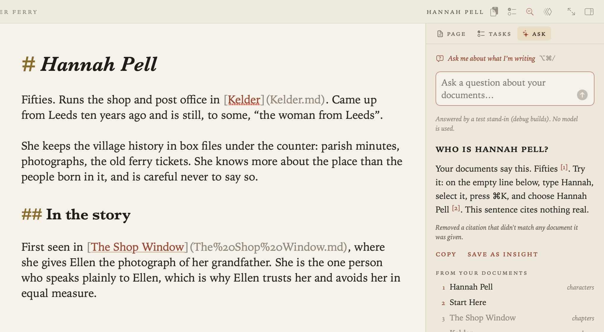
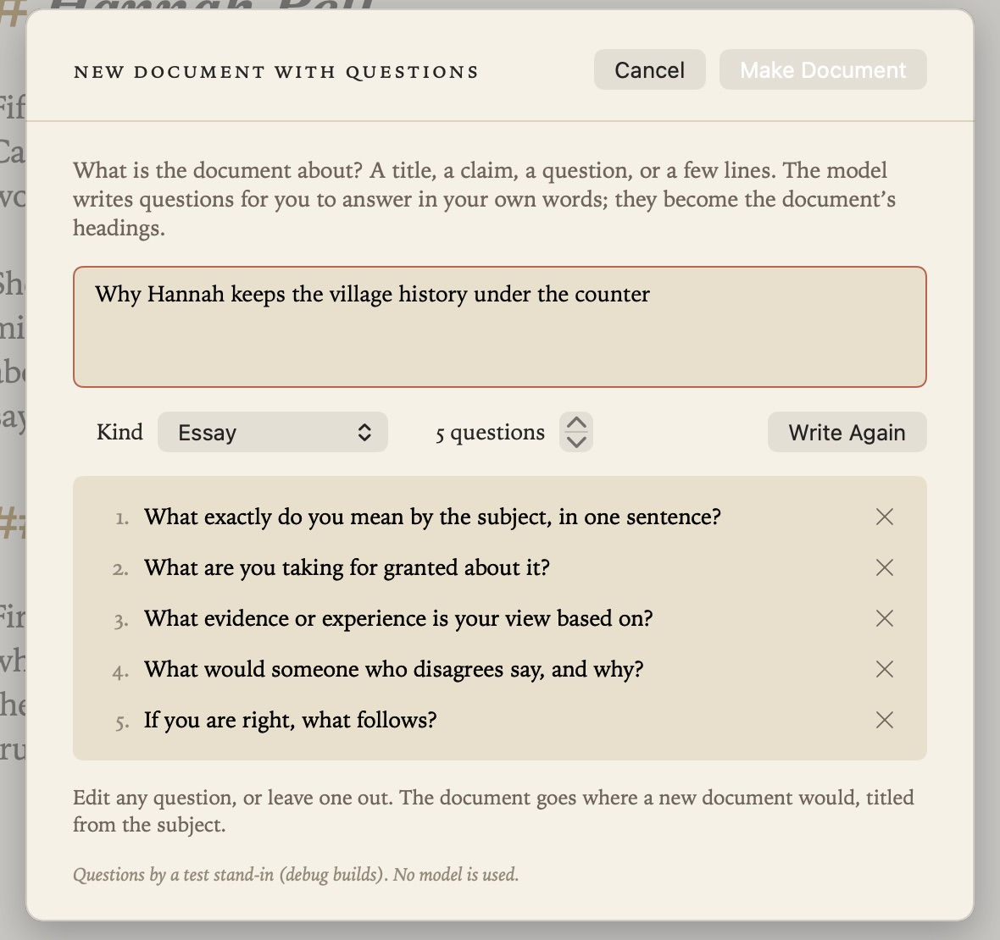
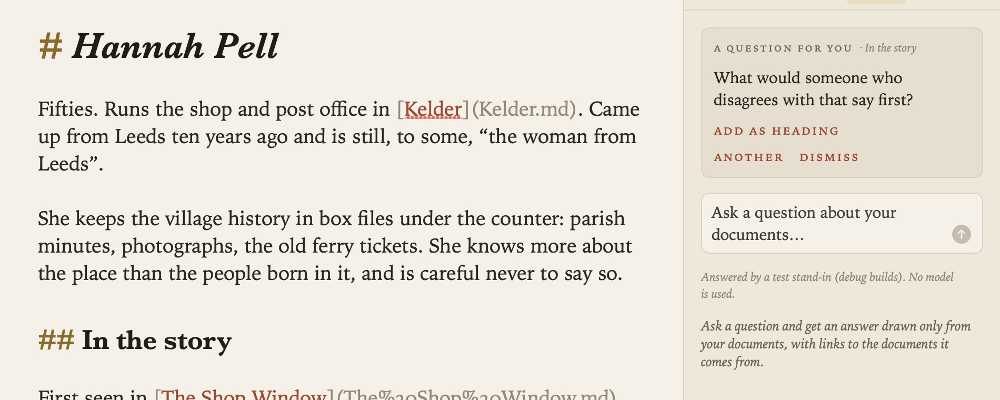
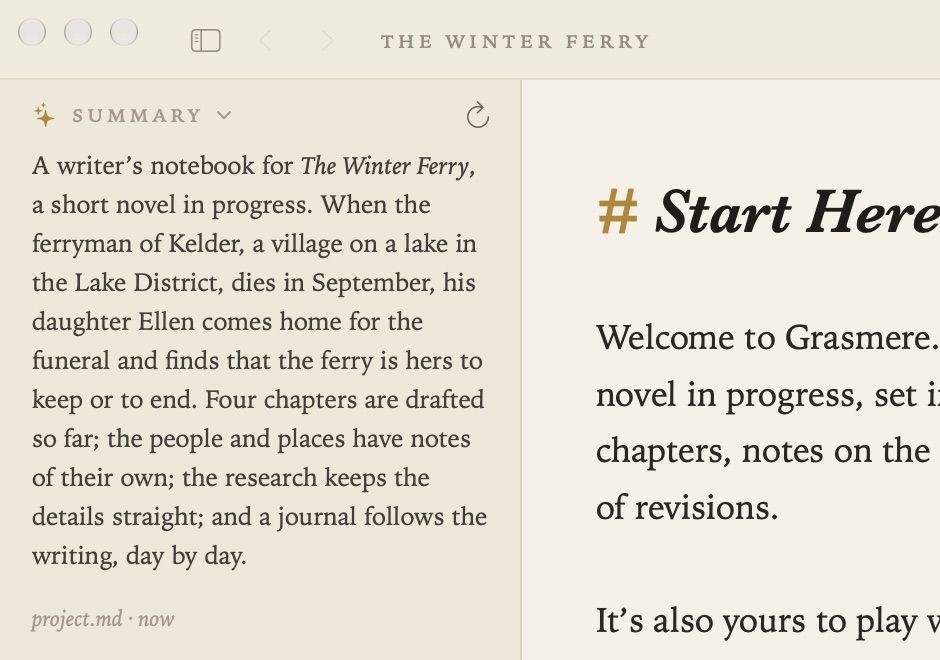
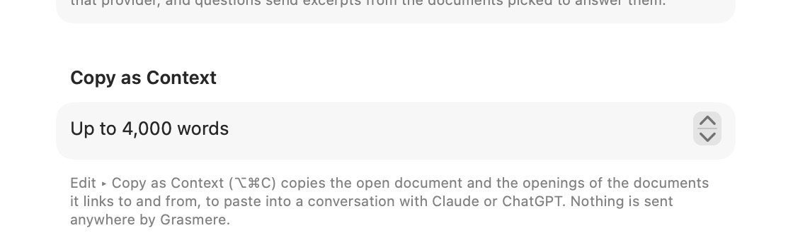
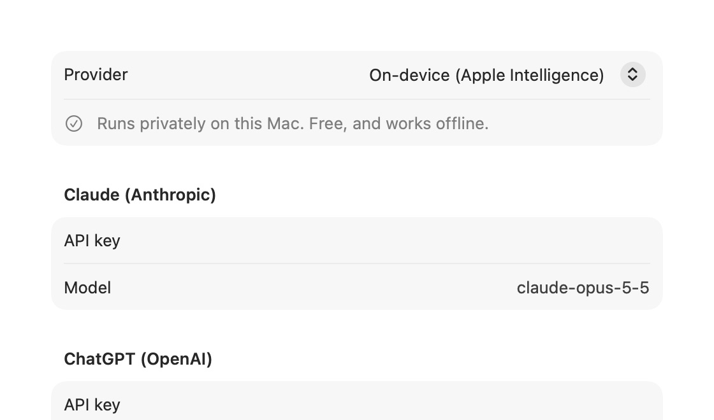
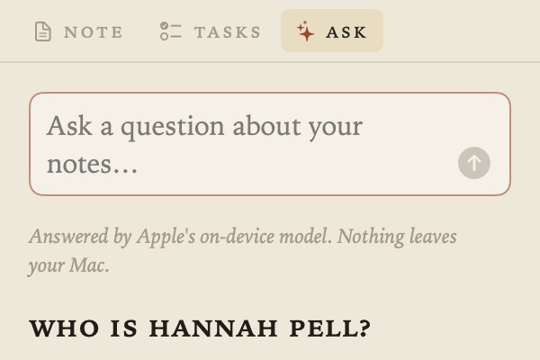
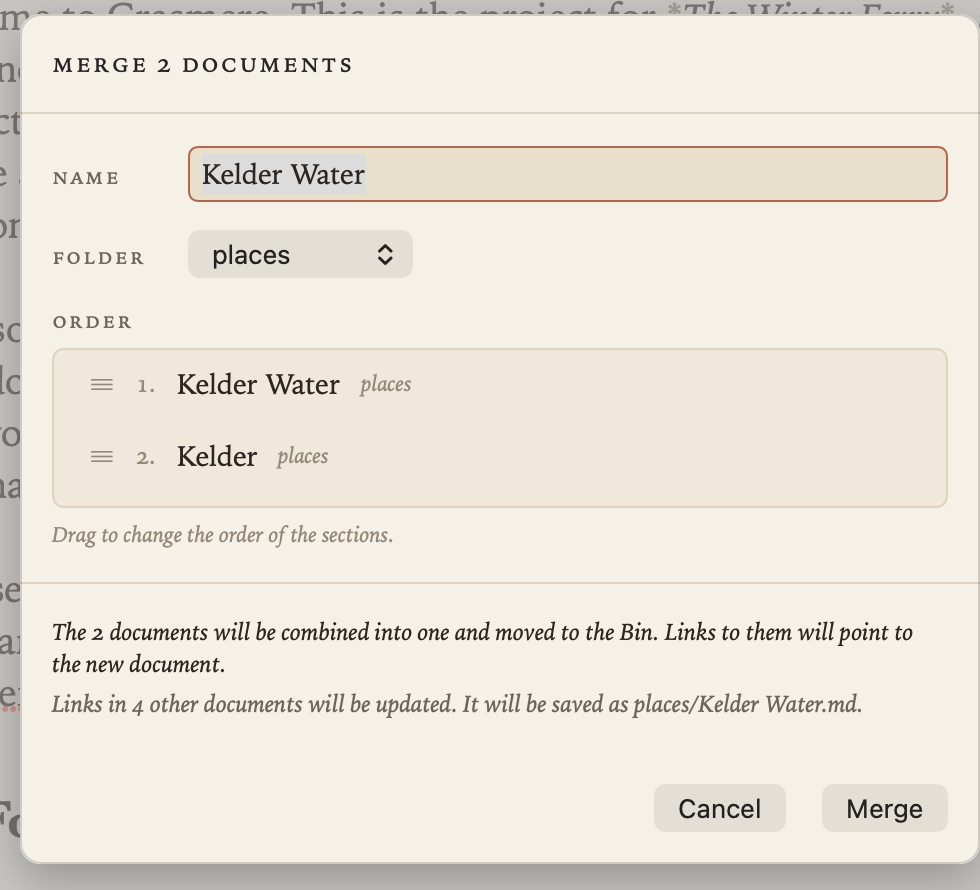

Ask Your Documents and AI
Grasmere has a few optional tools that use a language model to work with your documents. They’re off to one side: you can ignore them entirely, and nothing is sent anywhere until you ask.
Ask Your Documents (⇧⌘A)
Project ▸ Ask Your Documents (⇧⌘A) opens the Ask tab in the margin. Type a question, and the answer is written from your documents alone, with numbered citations. Click a citation to open the document at the passage it came from.

- Copy copies the answer, with its citations as links.
- Save as Insight saves it as a document in your insights folder, titled with the question, with the citations as links and
confidence: unverifieduntil you’ve checked it. - Questions you’ve asked are listed under Asked earlier until you close the window. They aren’t saved.
Brainstorm
New in 1.1. File ▸ Brainstorm starts a document the way a good tutor would: with questions. Say what the document is about (a title, a claim, a question, or a few lines), choose what kind of piece it is (an essay, an argument, a research document, a decision, a runbook, a story scene, a reflection, or just questions) and how many questions you want, and the model writes Socratic questions for it: ones that make you say what you mean, what you’re assuming, what your evidence is, what someone who disagrees would say, and what follows. New in 1.2: a runbook (how to deploy something, what to do when an alarm fires, how to onboard someone) gets the questions a runbook must answer instead, in the order its reader needs them: what it’s for and when, what must be true first, the steps, how you know it worked, what to do if it didn’t, who to tell; the document starts a checklist under the first of those and a numbered list under the steps. Edit or remove any, then Make Document. In a project the document goes where a new document would; with no project open, Grasmere asks where to save it.

The document has the questions as its headings, nothing else: the writing beneath them is yours. It goes where a new document would, titled from the subject, with the cursor under the first question. The model is the one in Settings ▸ AI (on your Mac by default); with Claude or ChatGPT, only the subject is sent.
Ask a Follow-up Question (⌥⌘/)
New in 1.1. While you’re writing under any heading, Edit ▸ Ask a Follow-up Question (⌥⌘/, or the line at the top of the Ask tab) has the model read what you’ve written in that section and ask one question back: the question a good tutor asks after reading a paragraph. It appears in the margin, not the document. Add as heading puts it after the section as a ## heading with the cursor beneath, for you to answer; Another asks something else; Dismiss forgets it. It never suggests wording and never answers for you, and it only speaks when you ask. With Claude or ChatGPT, the document’s title, the heading and the passage are sent.

Generate Summary
Project ▸ Generate Summary writes a short overview of the project into the Summary section of project.md, which is shown at the top of the contents. The rest of project.md is left as it is, and you can edit the summary like any other text.

Copy as Context (⌥⌘C)
Edit ▸ Copy as Context (⌥⌘C), or its button in the running head, copies the open document together with the titles and openings of every document it links to and from, ready to paste into a conversation with Claude, ChatGPT or any other assistant. Grasmere itself sends nothing anywhere. Settings ▸ AI ▸ Copy as Context sets how many words it copies (4,000 by default).

Which model answers
Settings ▸ AI ▸ Provider chooses the model for Ask Your Documents and Generate Summary:
- On-device (Apple Intelligence), the default. It runs privately on your Mac, is free, and works offline. It needs Apple Intelligence to be turned on.
- Claude (Anthropic) or ChatGPT (OpenAI), with your own API key from that company. You can choose the model too.
Your API keys are stored in your Mac’s keychain.

What is sent, and when
With the on-device model, nothing leaves your Mac.

With Claude or ChatGPT:
- When you ask a question, your question and excerpts from the documents Grasmere picks as relevant are sent to that company to answer it.
- When you generate a summary, the text of the documents being summarised is sent.
Nothing is sent until you ask, and only for that request. The Ask tab says which provider is answering. Your use is covered by your own agreement with that company. See Privacy.
Merging documents
Not an AI feature, but a way of thinking with your documents: pick two or more documents in the contents, right-click and choose Merge, and you get one document with a section for each. See The Contents.

Related
- Quick Capture and Sharing, for saving passages from AI conversations as insights